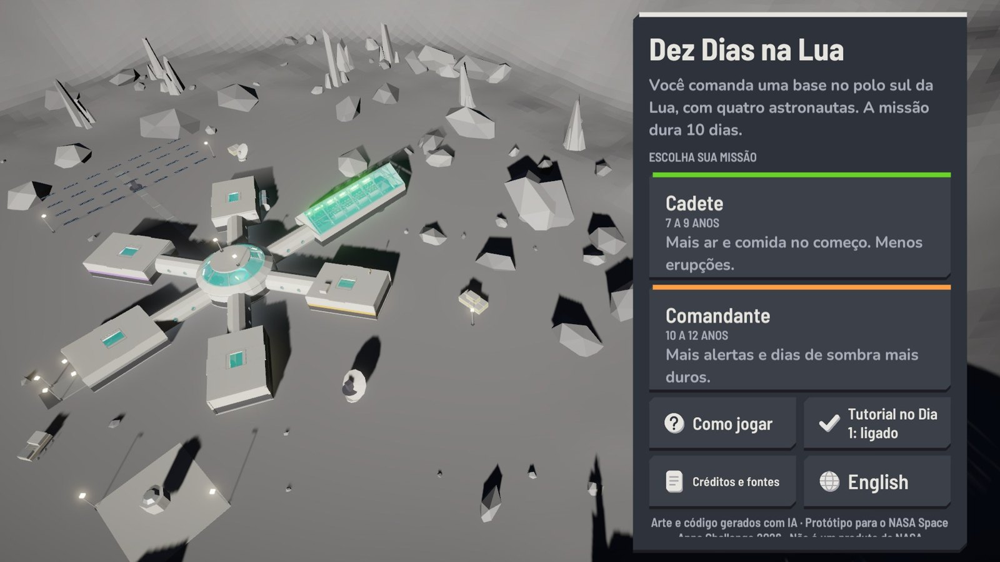
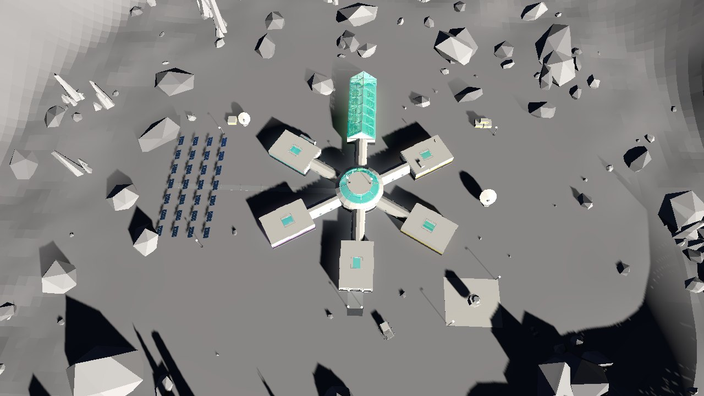
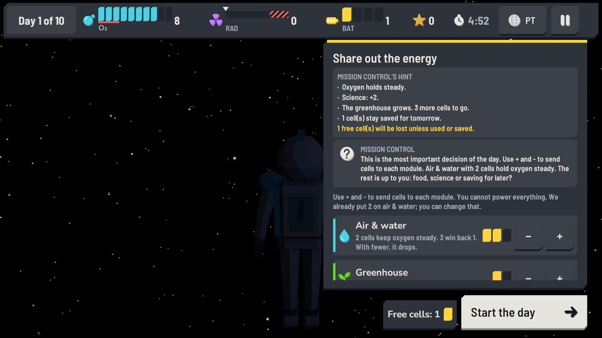
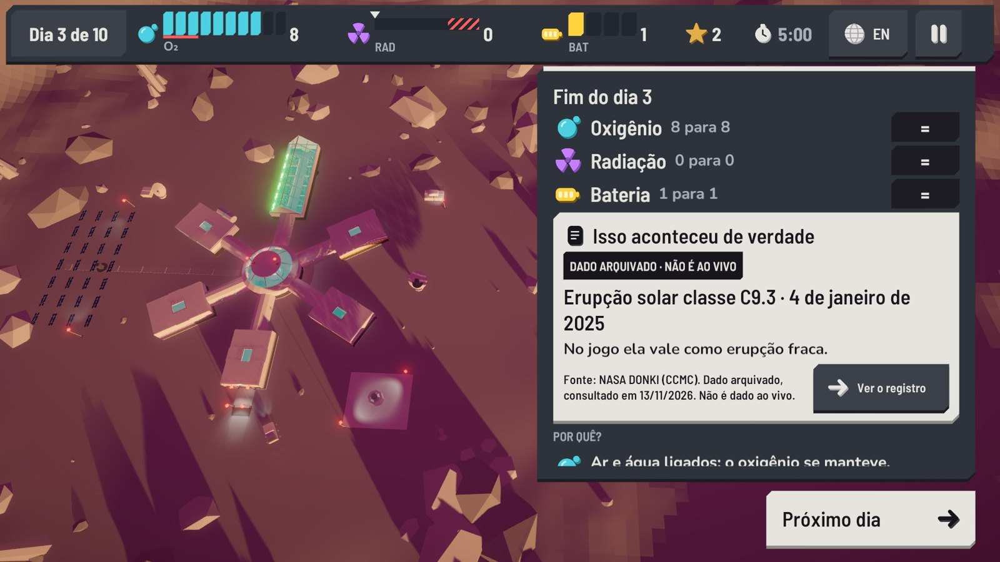
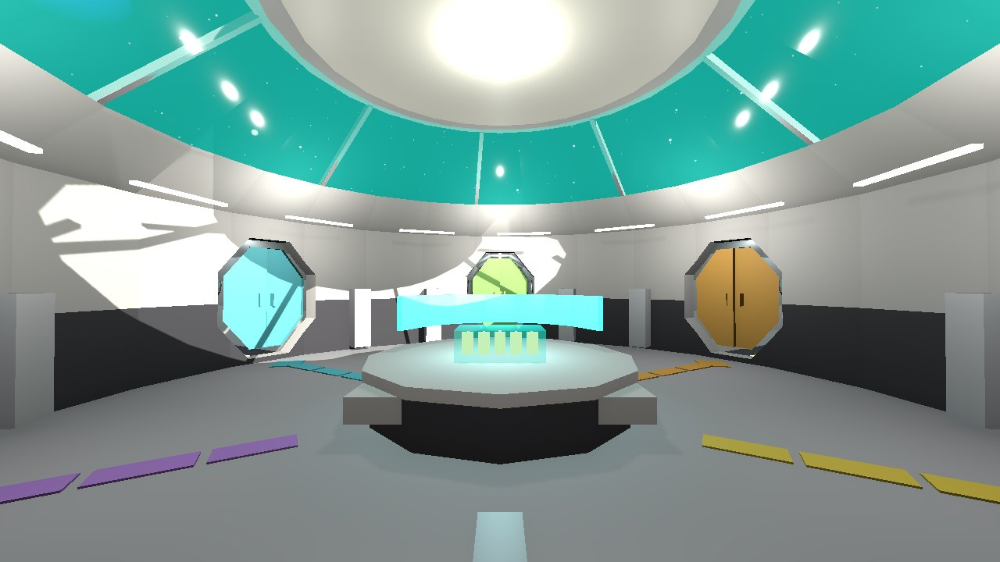

Ten Days
on the Moon.
O juiz lê sozinho. Cada slide se explica.
Para juízes que abrem o link sem ninguém apresentando, muitos com inglês como segunda língua.
Entender o jogo em menos de um minuto.
Ver que o DONKI muda o resultado da partida.
Sair com o link do itch.io na mão.
O manual de bordo de uma nave que uma criança consegue pilotar.
Nave clara por fora. Painel escuro por dentro.





Branco de casco domina. Cor só identifica sistema.
Fundo de quase todo slide, cerca de 70%
Títulos e texto, 14,2:1
Monitores e fechamento
Linhas de painel, só forma
Só o slide da erupção
Every day ends with the same question: where does the power go?
Going out earns science and spends suit air. Staying in saves air and misses the discovery.
Ten Days on the Moon
A strategy game for ages 7 to 12. You run a base at the Moon's south pole, and there is never enough power for everything.
Simulação com a captura atual. A imagem final entra depois do layout aprovado.
Cada slide é uma placa do casco.
O que sustenta a direção
- Código de placa no canto, como peça de nave
- Tela do jogo em monitor de aço com tira de luz
- Botão branco do jogo como única ação
O que fica de fora
- Logo, insígnia, bandeira e vermelho da NASA
- Neon, holograma e cartão arredondado de template
- Rótulo em caixa alta acima de todo título
A base é o produto. Mostrar como hardware.
Capa e fechamento. Foto de hardware em sala limpa, sem céu.
Escolha, erupção e relatório, nos slides 4, 5 e 7.
Slide 3. Os cinco módulos rotulados, nas cores dos sistemas.
Nos medidores e sistemas. Nada de ícone novo.
Fica de fora: foto real de nave ou astronauta e qualquer desenho de criança. Direitos não conferidos, risco de identificador da NASA e regra de menores.
Do casco claro ao painel escuro, com o link.
Título grande, render da base, botão para jogar.
A pergunta grande; a equipe como manifesto de tripulação.
Uma linha de missão com 5 marcos e os 3 medidores do HUD.
Monitor grande com a tela de energia; os dois botões lado a lado.
Único slide de céu. Cartão real e régua C, M, X.
Tabela técnica de 5 linhas, cada uma com plaqueta de fonte.
Painel de aço, a frase grande, o botão com o link.
Nos slides 1 e 7, como o botão branco do jogo.
Da direção aprovada
ao deck enviado.
Você valida ou ajusta esta direção.
Os 7 slides com as áreas de imagem marcadas. Depois, capturas e render.
Seu olhar ajusta o deck antes do envio.